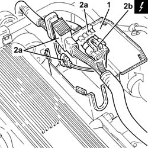
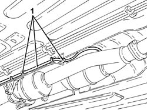
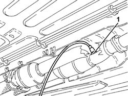
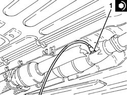

1080B97 right rear lambda sensor on catalytic converter r r
- Path
- Procedures > 10 ENGINE > 1080 EXHAUST EMISSION CONTROL SYSTEM > 1080B exhaust emission control system > 1080B97 right rear lambda sensor on catalytic converter r r
- Kind
- repair procedure (removal / refitting; the operation number is the code)
- Applies to
- engines: 3.2 V6; all production periods
- Interactive page
- https://sloeber94.github.io/elrnDB-a147/en/#/3024989
Applies to: engines: 3.2 V6; all production periods
 Removing
Removing
 Refitting
RefittingPlace the car on the ramp.
Ensure that the ignition key is in the OFF position, then disconnect the negative battery terminal (-).
 | Name | Connector |
|---|---|---|
- | Battery |
1. Open the electrical connections box cover.
2. Remove the connections (2a) and disconnect the electrical connection for the right rear Lambda sensor for the catalytic converter (2b).
| Name | Connector |
|---|---|---|
2b | Lambda sensor on catalyzer -2 |
Release the electrical wiring for the right rear Lambda sensor for the catalytic converter from the fastenings in the engine bay.

Applies to: engines: 3.2 V6; all production periods
Proceed with removal 7055B54 under-engine guard - r r .
1. Release the electrical wiring for the right rear Lambda sensor for the catalytic converter from the underbody fastenings.

Applies to: engines: 3.2 V6; all production periods
1. Undo the right rear Lambda sensor from the catalytic converter using a suitable spanner and remove it.

Applies to: engines: 3.2 V6; all production periods
Refitting
Removing1. Place the right rear Lambda sensor for the catalytic converter back in its housing and tighten it to the recommended torque.
 | Fastening | Component | Ø | Value (daNm) |
|---|---|---|---|---|
1 | - | LAMBDA SENSOR BEHIND RIGHT CONVERTER | M18 | (Catalytic converter assembly side) 4.1 ÷ 5.0 |

Applies to: engines: 3.2 V6; all production periods
Secure the electrical wiring for the right rear Lambda sensor for the catalytic converter to the underbody fastenings.
Proceed with refitting 7055B54 under-engine guard - r r .
Secure the electrical wiring for the right rear Lambda sensor for the catalytic converter to the engine bay fastenings.
Connect the electrical connection for the rear Lambda sensor to the catalytic converter.
Refit the electrical connections, then close the electrical connections box cover.
Connect the negative (-) battery terminal.
Remove the car from the ramps.